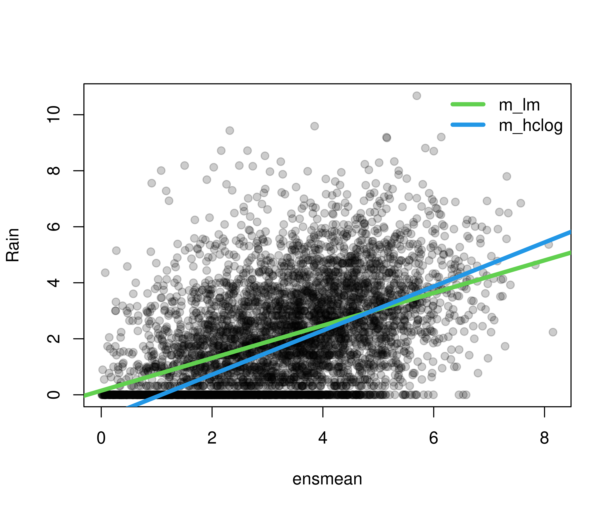

crch: Heteroscedastic Censored and Truncated Regression
Overview
The package crch provides various regression models for continuous or mixed discrete-continuous data with right- and/or left-censoring or truncation of the response. The models use separate linear predictors for the mean/location and variance/scale parameters and can thus incorporate heteroscedasticity (conditional on regressors). This has prompted the package name crch (pronounced like search) which stands for censored regression with conditional heteroscedasticity.
A number of different estimation methods can be used:
- Maximum likelihood estimation.
- Minimum CRPS estimation.
- Boosting and stability selection.
The underlying infrastructure for various probability distributions encompasses:
- Censored or truncated normal, logistic, and Student-t distributions.
- Corresponding d/p/q/r functions.
-
distributions3objects.
Heteroscedastic extended logistic regression (HXLR) via cumulative link models for ordinal data, obtained by interval-censoring continuous data, is also available.
Installation
The stable version of crch is available on CRAN:
install.packages("crch")The latest development version can be installed from R-universe:
install.packages("crch", repos = "https://zeileis.R-universe.dev")License
The package is available under the General Public License version 3 or version 2
Illustration
An illustration for censored regression from atmospheric sciences is rain forecasting. Here, the observed response data are 3 day-accumulated precipitation amounts over 13 years (2000–2013) at Innsbruck airport. The covariates are obtained from numerical weather predictions (GEFS reforecasts). Package and data can be loaded via:
Ensemble mean and standard deviation of the numerical rain forecasts are used as the regressors for mean and variance of the observations, respectively.
Then a classical homoscedastic linear regression is compared with a heteroscedastic logistic distributional regression, censored at zero to account for the point mass at zero (i.e., 3-day periods without rain).
Comparing the fitted regression lines shows that the censored model (in contrast to the classical linear regression) is able to capture a steeper regression line, i.e., a tighter relationship between rain forecasts and actual observations.
plot(rain ~ ensmean, data = RainIbk, pch = 19, ylab = "Rain", col = gray(0, alpha = 0.2))
abline(coef(m_lm)[1:2], col = 3, lwd = 4)
abline(coef(m_hclog)[1:2], col = 4, lwd = 4)
legend("topright", lwd = c(4, 4), lty = c(1, 1), col = c(3, 4),
c("m_lm", "m_hclog"), bty = "n")
The summary output of the censored model shows that not only the mean of the rain observations but also their standard deviation significantly depends on the corresponding quantities from the numerical weather prediction ensemble.
summary(m_hclog)
##
## Call:
## crch::crch(formula = rain ~ ensmean | log(enssd), data = RainIbk, dist = "logistic",
## left = 0)
##
## Standardized residuals:
## Min 1Q Median 3Q Max
## -3.5780 -0.6554 0.1673 1.1189 7.4990
##
## Coefficients (location model):
## Estimate Std. Error z value Pr(>|z|)
## (Intercept) -0.85266 0.06903 -12.35 <2e-16 ***
## ensmean 0.78686 0.01921 40.97 <2e-16 ***
##
## Coefficients (scale model with log link):
## Estimate Std. Error z value Pr(>|z|)
## (Intercept) 0.11744 0.01460 8.046 8.58e-16 ***
## log(enssd) 0.27055 0.03503 7.723 1.14e-14 ***
## ---
## Signif. codes: 0 '***' 0.001 '**' 0.01 '*' 0.05 '.' 0.1 ' ' 1
##
## Distribution: logistic
## Log-likelihood: -8921 on 4 Df
## Number of iterations in BFGS optimization: 15